这场分享来自龙门客栈 S01E03，主讲人 Sunday，前算法工程师，全职出海一年。他不靠技术背景起步，网站技术原本也一窍不通；真正拉开差距的，是找词、选词，以及围绕这两件事建立起来的一套循环和取舍。
| 指标 | 分享中的数字 |
|---|---|
| 全职时间 | 1 年 |
| 站点数量 | 90+ 个 |
| 上站速度 | 平均 4 天一个站 |
| 正反馈起点 | 第 7—8 个站 |
| 团队 | 我 + AI |
下面按 PPT 页码从第 03 页讲到第 32 页，先讲「怎么找到更多词」，再讲「哪些词值得做」，最后讲上站、经营、收入与个人复盘。
一、找得多：把找词变成一个可以滚动的循环
1. 日常找词：站找词，词找站
分享先把找词还原成一条链：从一个起点站出发，先站找词，再词找站，得到新站后继续往后。站找词是一对多：Similarweb、Semrush、Ahrefs，看它的内页特别是「新页面」，看它在投广告的词，看大站 sitemap 变化，也可以让 AI 拓展。词找站则发生在任何有搜索框的地方：谷歌、Bing、DuckDuckGo、Yandex、YouTube、TikTok，以及用 Similarweb 看一个词的竞争对手。
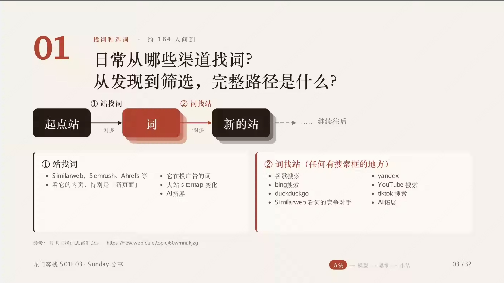
这一页参考了哥飞《找词思路汇总》。重点不是把工具名单背下来，而是记住「起点—扩散—新起点」这个结构：每一个新站、每一个新词，都可以成为下一轮的起点。
2. 再往外延：词找词，站找站
词还能找词，站还能找站。站找站包括：Similarweb 相似站点、搜「xxx alternative」、导航站和目录站、Similarweb 的用户还访问了哪些网站、大站出站链接按首次发现排序、vercel.app 下的新子域名，以及 AI 拓展。词找词包括：谷歌下拉联想、相关搜索、People also ask、Google Trends 相关查询、Semrush/Ahrefs 关键词扩展、Google Ads 关键词规划、同义词和缩写全覆盖（photo / image / pic），以及 AI 拓展。
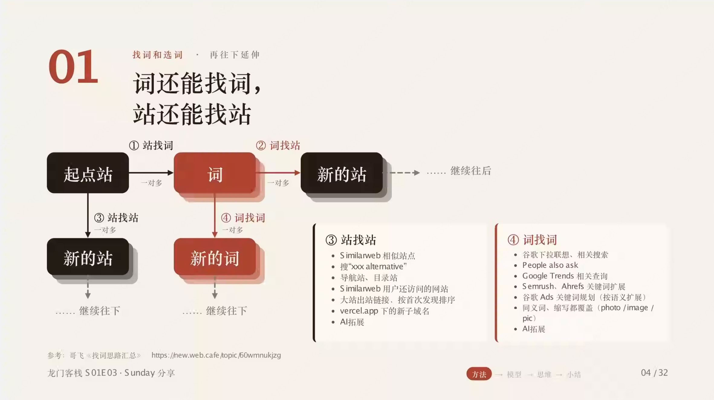
到这里，四种找法齐了：站找词、词找站、站找站、词找词。它们不是四个孤立的技巧，而是同一个循环的四个方向。
3. 建模：把方法画成一个循环
把四种找法画成模型后，规律一眼可见：每一轮都由四种扩散方式衍生出新的词和站，第二轮从这批新词新站继续，一直滚到第 N 轮。词有多少，取决于三个条件。
- 循环次数：取决于花多少时间；循环越多，找到的词和站越多，这是苦功夫。
- 起始输入：从榜单里挑出的、能赚钱的优质站，放进循环容易出好结果；三流导航站里来的输入，结果多半不尽人意。
- 扩散方式：站找词、词找站、站找站、词找词四种找法，用得全不全、灵不灵活、能否触类旁通、举一反三。
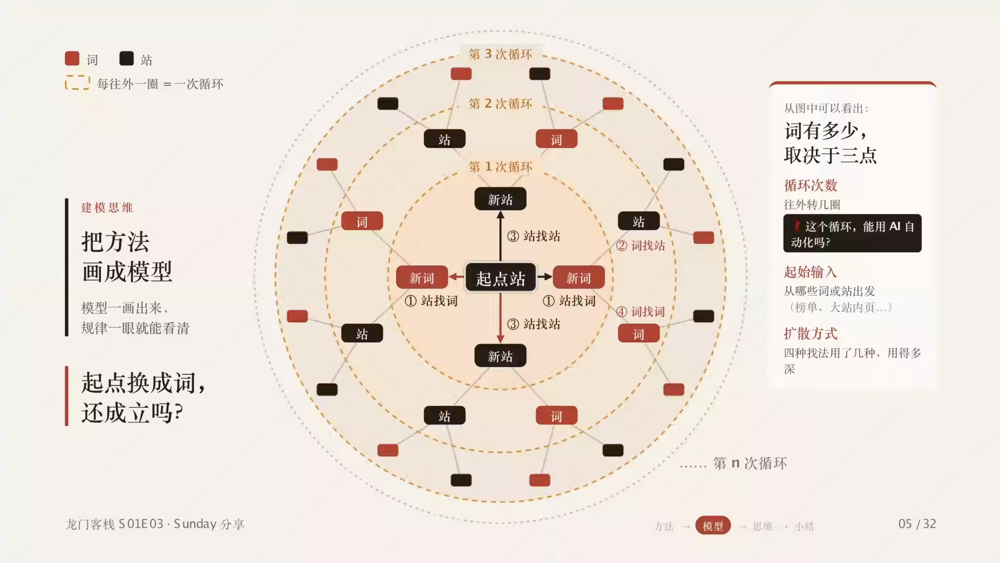
对照这三点，就能定位自己找词不足出在哪个环节，不至于像无头苍蝇。分享还留了一个问题：这样的循环结构，能否用 AI 自动化找词？现场没有给答案，值得自己想一想。
4. 词站二象性：找词就是找站
起点换成词，结构完全一样；词和站互为输入。词是用户说出来的需求，站是需求被做出来的产品——同一个需求的两个角度。所以找词和找站走的是同一张网，真正在找的既不是词也不是站，而是需求；词和站只是需求的两个入口，底层思维共通、可以相互迁移。
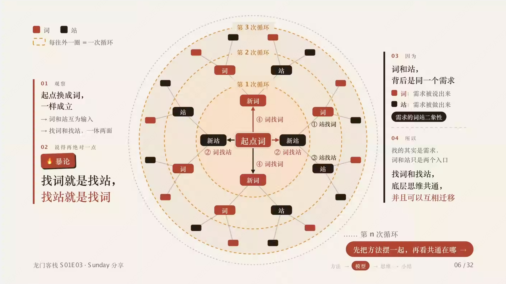
「找词就是找站，找站就是找词」被讲者标成暴论，是一家之言；但「词站互相喂养、背后是同一个需求」这层关系，是整场分享的方法论底座。
5. 四种找法的一张总表
把起始输入和四种找法放在一起，就是一张可执行的找词地图。起始输入可以来自 Stripe/Creem 榜单、TrustMRR、哥伦布、大站内页，也可以让 AI 拓展；然后分别用四种找法往外扩散。
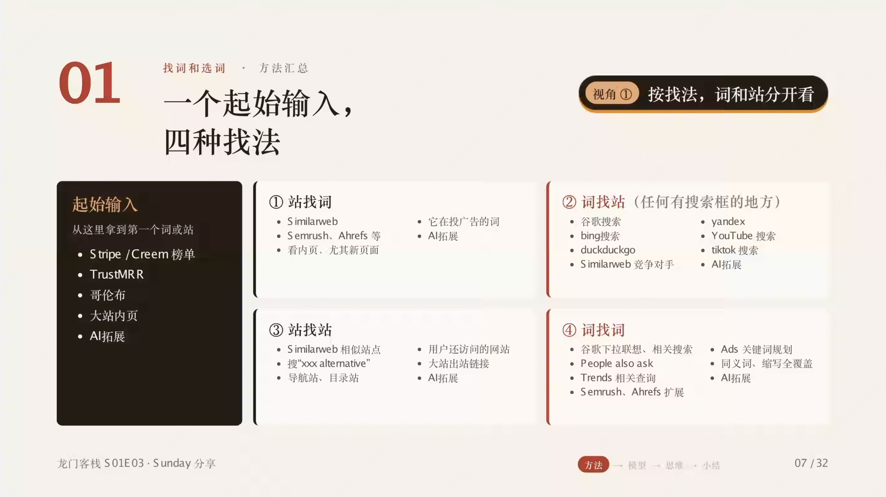
- 站找词：Similarweb、Semrush、Ahrefs，看内页尤其是新页面，看在投广告词，看大站 sitemap 变化，AI 拓展。
- 词找站：Google、Bing、DuckDuckGo、Yandex、YouTube、TikTok，Similarweb 看词的竞争对手，AI 拓展。
- 站找站：Similarweb 相似站点、搜「xxx alternative」、导航站/目录站、用户还访问的网站、大站出站链接、vercel.app 新子域名，AI 拓展。
- 词找词：下拉联想、相关搜索、People also ask、Trends 相关查询、Semrush/Ahrefs 扩展、Ads 关键词规划、同义词/缩写覆盖，AI 拓展。
6. 八种底层思维：工具不同，思维相同
方法层面按「起始输入 + 四种找法」看，词和站分开、各有各的工具；换成思维角度重新配对，同一套思维在词、站两侧各有用法。先看基础五种。
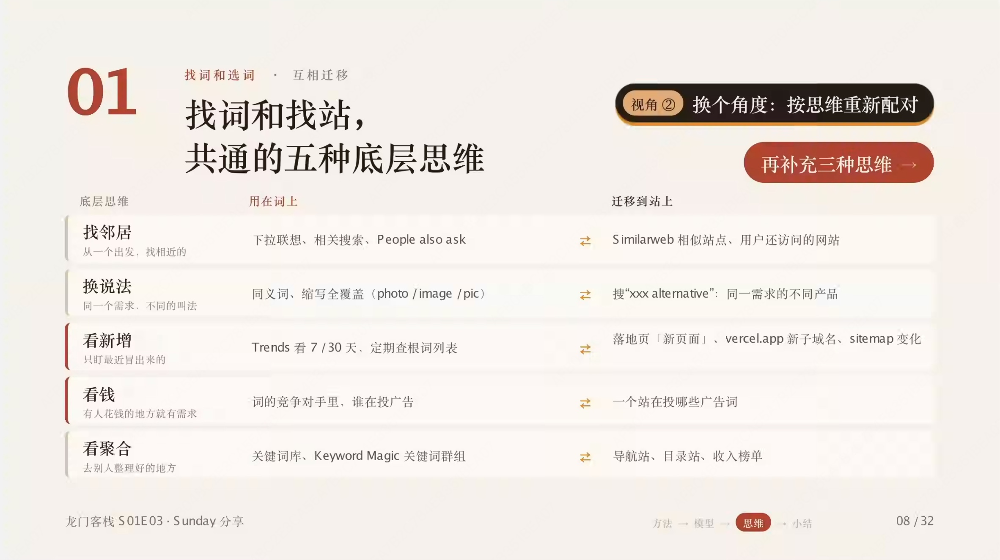
| 底层思维 | 用在词上 | 迁移到站上 |
|---|---|---|
| 找邻居 | 下拉联想、相关搜索、People also ask | Similarweb 相似站点、用户还访问的网站 |
| 换说法 | 同义词、缩写全覆盖（photo / image / pic） | 搜「xxx alternative」：同一需求的不同产品 |
| 看新增 | Trends 看 7 / 30 天、定期查根词列表 | 落地页「新页面」、vercel.app 新子域名、sitemap 变化 |
| 看钱 | 词的竞争对手里，谁在投广告 | 一个站在投哪些广告词 |
| 看聚合 | 关键词库、Keyword Magic 关键词群组 | 导航站、目录站、收入榜单 |
再补三种。追根溯源：搞清一个词从哪里火起来，下一次去同一个源头找类似的词。举一反三：video generator 做起来了，就联想 music generator、image generator、music video generator——换个对象联想，词站通用。补位思维：看 SERP 前十名缺什么；如果全是内页或质量很差，就有补位机会；已证明有需求有流量的站，缺的功能和短板就是机会。
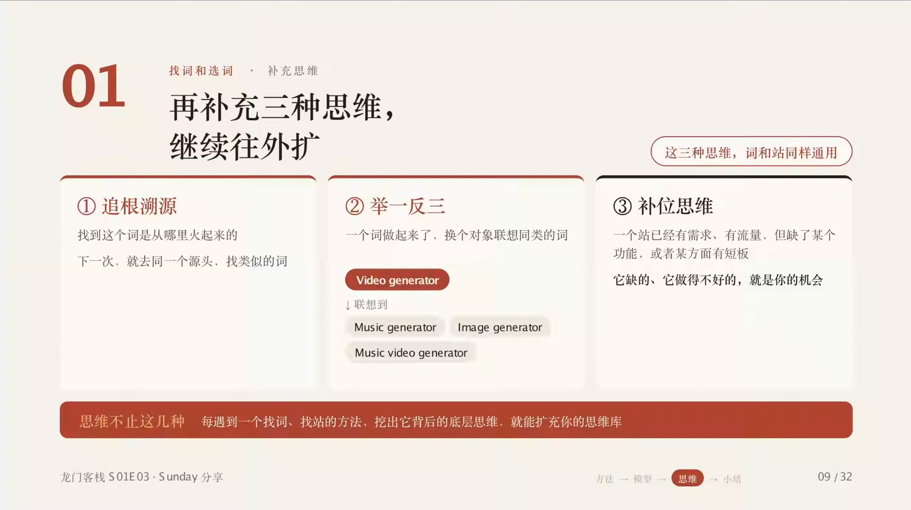
工具不同，思维相同；思维不止这 8 种，库可以一直扩。每学一个新方法，就把背后的思维挖出来放进库里——思维库不断扩充，方法就源源不断。
7. 小结：一个模型，八种思维
方法层是一个模型：循环次数、起始输入、扩散方式。思维层是五种基础加三种补充，再用 AI 辅助思考、查漏补缺。词不够时，对照模型查三件事：圈转够了吗？起点够多、够新、够刁钻、够优质吗？四种找法用全了吗？遇到瓶颈时，对照思维查三件事：底层思维用上了吗？补充思维试过了吗？AI 问过了吗？想继续突破时，做全局拆解，把思维往词、站两侧迁移，再往更深的维度挖。
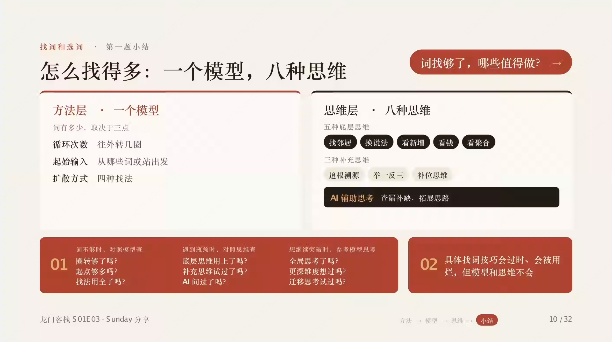
技巧会过时。哥飞去年分享的 51 个词根挖掘法，一年间被群友挖无可挖——小池塘被挖干了。用模型看，51 个词根本质是一批优质起始输入，如今不再优质，最直接的办法就是换一批优质输入，不一定是词根；用思维看，它用的是「看新增」，完全可以换成自己领域的新词来盯，再迁移到站上，盯大量新页面、新子域名。
技巧会过时、用的人多了会失效，但模型和思维不会。
二、选得准：量、竞争、付费
8. 三维度：值不值得做、能不能做、能不能赚钱
选词先看三个维度：搜索量够不够（值不值得做）、竞争能不能打（能不能做）、用户愿不愿付钱（能不能赚钱）。三个都过，才值得做。
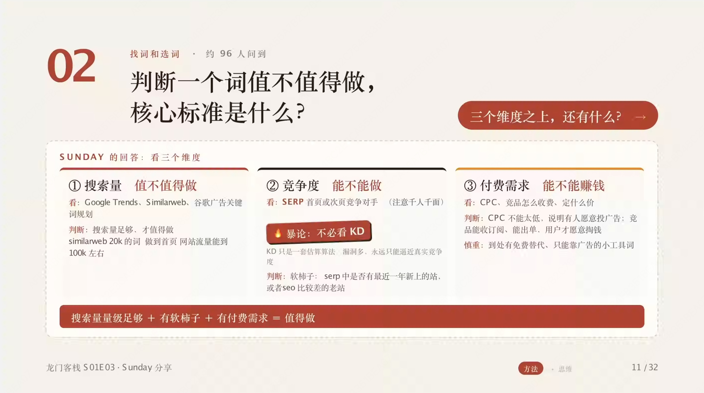
- 搜索量：常用 Google Trends、Similarweb、谷歌广告关键词规划师。经验值：Similarweb 上 20K 左右的搜索量，做到首页网站流量约可达 100K；10K、5K 的词若有好几个相似词，也能凑到 100K。这是经验参考，不是通解。
- 竞争度：看 SERP 首页或前几位竞对。谷歌结果千人千面，用无痕浏览器排除干扰，或用 Similarweb 搜这个词，受千人千面影响更小。KD 不用太看：它只是 Ahrefs 的竞争度估算，漏得多，比如不考虑前排是内页还是首页；算法只能接近真实，替代不了人工。
- 付费需求：CPC 不低，说明有人愿意为这个词投广告；再看竞品怎么收费——免费还是付费、定价 9.9 还是 4.9、一次性还是订阅；能订阅、能出单，说明用户愿意掏钱。风险：SERP 前排全是免费站，或只能靠广告变现的小工具，就要慎重。
找软柿子的判据：SERP 里有没有最近一年上的新站、SEO 很差的老站。有新站就把它流量做起来，看它的打法——它的打法你也能做到，这个词理论上你也能做。反例是 Gemini watermark remover：前几名流量非常大，但全是免费站，就算流量做起来，付费率也会很难看。
搜索量足够 + 有软柿子 + 有付费需求 = 值得做。
9. 异常值：从一大堆词站里快速锁定值得深挖的
三个维度是一词一词的判断；在其上设定异常值，才能从一大堆词站里快速发现哪个值得深挖。信号名单可以不断补充。
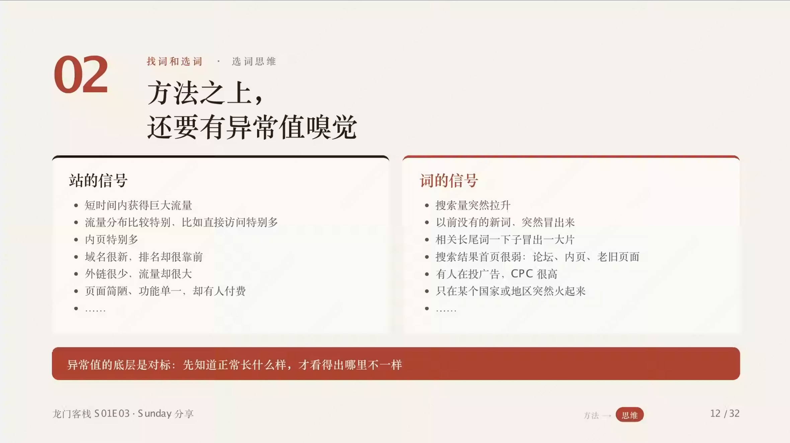
站的信号：短期内获得巨大流量；流量分布特别，比如直接访问特别多——必有原因，可能免费、体验特别好，或需求非常痛；内页特别多；域名很新，排名却很靠前；外链很少，流量却很大；页面简陋、功能单一，却有人付费。
词的信号：搜索量突然骤升、突变拉升；以前没有的新词冒出来；相关长尾词一下子冒出一大片；SERP 首页全是弱站——论坛、内页、老旧页面；有人在投广告、CPC 很高；只在某个国家或地区突然火起来。
异常值的底层是对标：平时多看站、多看词，心里装着「正常长什么样」，异常一出现就能看出来。这有点经验主义，但也是判断力的一部分。
三、看得深：榜单与竞品
10. 榜单三段式：人工定思路，AI 初筛，人工细看
榜单上几千上万个站，逐个看不过来。思路自己定，粗活交给 AI：第一步人工定思路——要研究什么就筛什么，品牌站、关键词站，还是短期窜升的站，指标可以是建站日期、流量变化率；第二步 AI 初筛——按你的思路筛一遍，挑出值得看的；第三步人工细看——打开筛后的站，逐个深看。
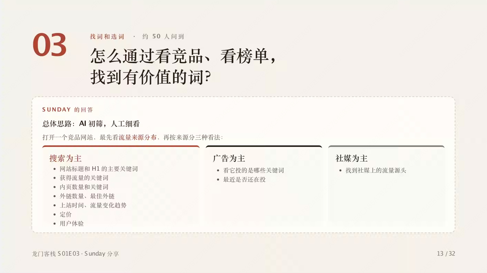
打开一个竞品站，最先看流量来源分布，再按来源走不同的分析路径。
- 搜索为主：网站标题、H1 的主关键词 vs 实际带来流量的关键词——两者可能不一致；不一致就是异常点，也是机会点。内页看数量、关键词、是否拿到流量——内页能拿流量，你用内页或主页关键词域名站同样能拿。外链数量与最佳外链建议在 Ahrefs 看：近半年 spam 外链泛滥、数量虚高，新站一条没加也可能显示一两百条，基本全是 spam。上站时间与流量趋势有无异常值。最后看定价和用户体验：真正当一回用户——登录、生成、付费，看功能是否丝滑、有无使用与付费引导、不付费时它怎么引导。
- 广告为主：看在投的关键词是什么、最近是否还在投。一直在投，说明这个词在赚钱；最近停投，投流竞争可能比较大。
- 社媒为主：找流量源头——靠哪个帖子、哪个视频火起来的，这就是追根溯源。
- 直接访问特别多：必有原因，可能免费、体验特别好，或需求非常痛——值得重点研究，里面可能藏着机会点。
四、做得快：上站、冷启动与取舍
11. 新词三问：还能不能做、怎么更早发现、没搜索量怎么判断
这三个问题在分享里被问得很多。
- 已有人做的新词还能做吗？只要不是一波流、还在涨、竞争不激烈，就可以做。
- 别人当天上站的热词，从哪里发现？找到之前那些新词的源头，用 AI 监控：推特监控新模型发布，TikTok 监控热点词——还是追根溯源。
- 搜索量还没出来，怎么判断值不值得做？只能拼经验，看过往类似情况；有五成把握就上——上一个站不过一个域名的钱，以小博大；等完全有把握，机会已经错过了。
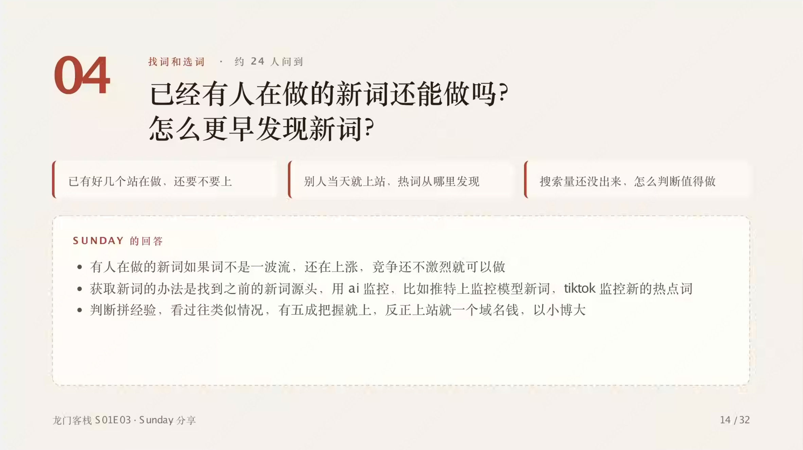
12. 现在该选什么方向和赛道
小游戏站、攻略站适合练手，赚钱效率不如订阅站。编程小白就买模板 + AI，只要找对关键词，什么站都做得出来——关键是迅速拿到正反馈，否则容易从入门到放弃。
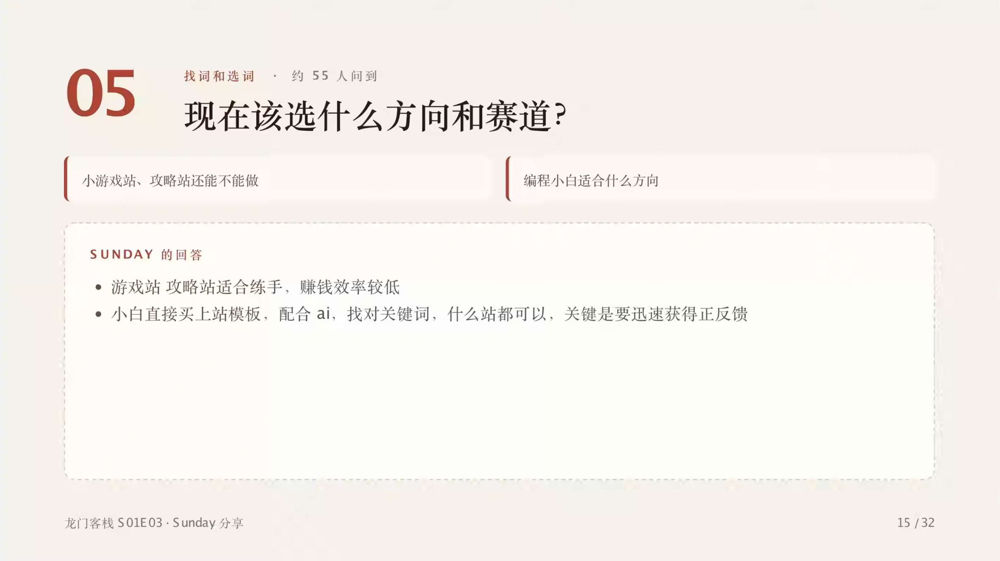
13. 平均 4 天一个站的 SOP
AI 自动上站，按固定 9 步走，最快半小时；半自动比全自动快，因为可以多步骤、多会话并行。
- 买域名 + 绑定 Cloudflare：必须最先做，NS 解析需要时间。他吃过亏——站做完了才去绑域名，等解析生效，上线反而比别人慢。
- 清理旧项目、新建私仓。
- 英文首页 SEO。
- 全站品牌迁移。
- 数据库与 Cloudflare 部署。
- Google 登录与统计。
- 客服邮箱。
- GSC 与 Bing。
- 配置支付：唯一无法完全自动化的步骤，涉及金融必须手动；放最后，就不会打断前面全自动流程的连贯性。
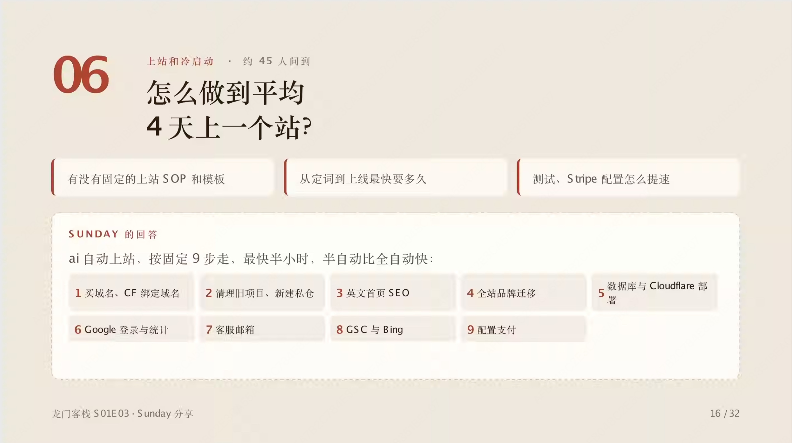
另外三条经验：提交 GSC 放在偏后，给 AI 执行留出反应时间，检查完文案、确认没问题再提交；最终人工测试省不了——登录、生成、支付等关键流程，老老实实自己测一遍；Stripe 配置可以提速——新建商户复用旧商户资料，省掉填资料的时间，但仍需手动操作。
14. 新站前 30 天：on-page → 外链 → 内页
顺序是：On-page SEO 上线时就做好——之后加了外链再改，会影响权重；然后加外链，看效果；最后才轮到内页 / DR。只要选词没问题，新站 + 外链，收入和出词并不难——问题通常不在新站或 DR，而在选词。SEO 之外还可以系统投广告，但不是他的强项，不展开。
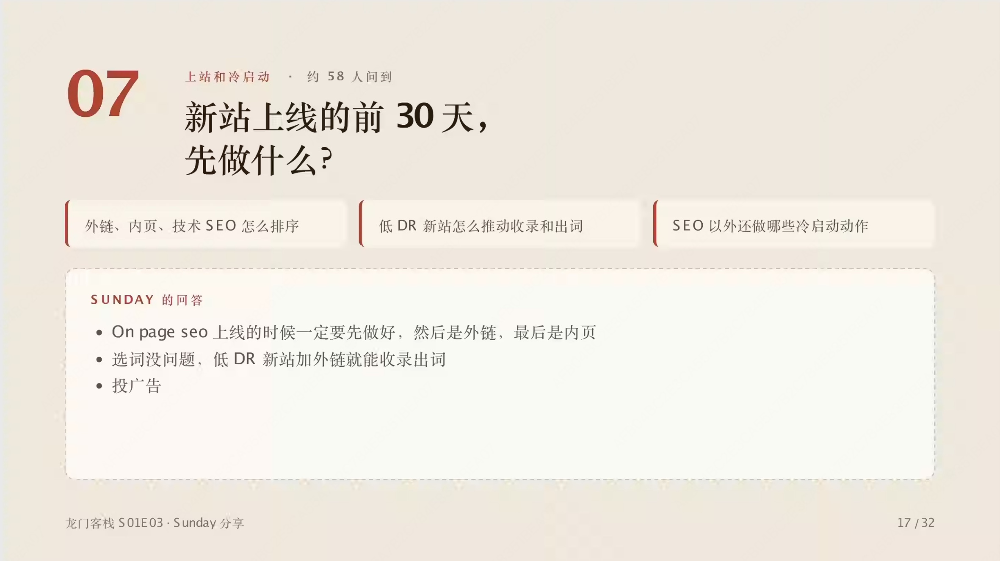
15. 外链与内页的资源分配
外链：选几个长线发展的重点站重点加，其余大部分站只加基础外链。付费外链：对这个词的站非常笃定，一开始就加；不确定就等流量涨起来。还要看新词竞争大不大——内卷的话别人一开始就加，你不加，等同于放弃。
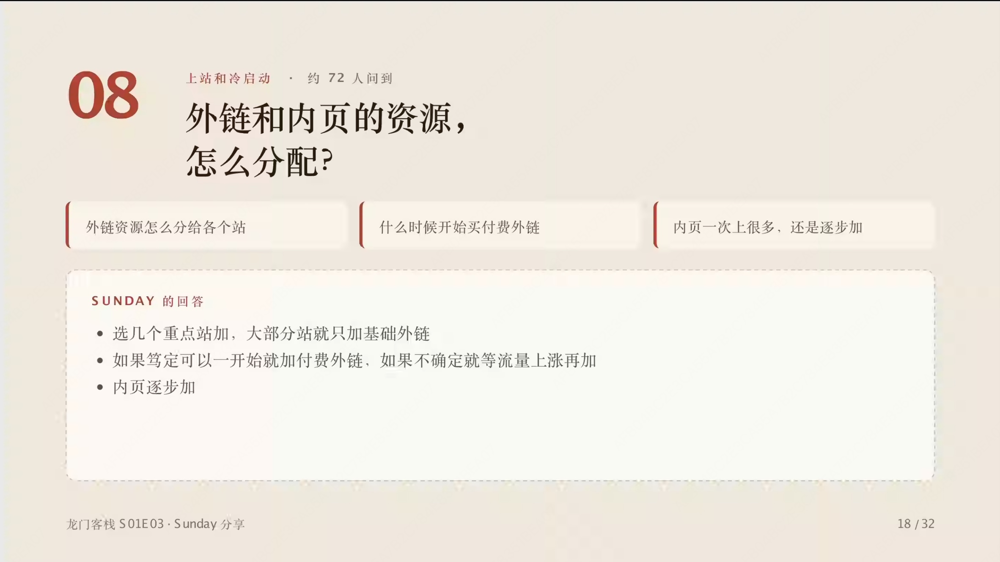
内页：肯定是逐步加——一次性上很多，新站也不一定收录。大部分站等流量上涨后再加；少数重点站定期加内页、看数据。
16. 加投、止损与搁置
流量上涨就加大投入，一点一点加；特别长时间没有上涨趋势，或被惩罚——原有流量突然降到 0、GSC 流量骤降——就停止投入、及时止损；完全没有流量的站，直接放下不管，精力留给有反馈的站。
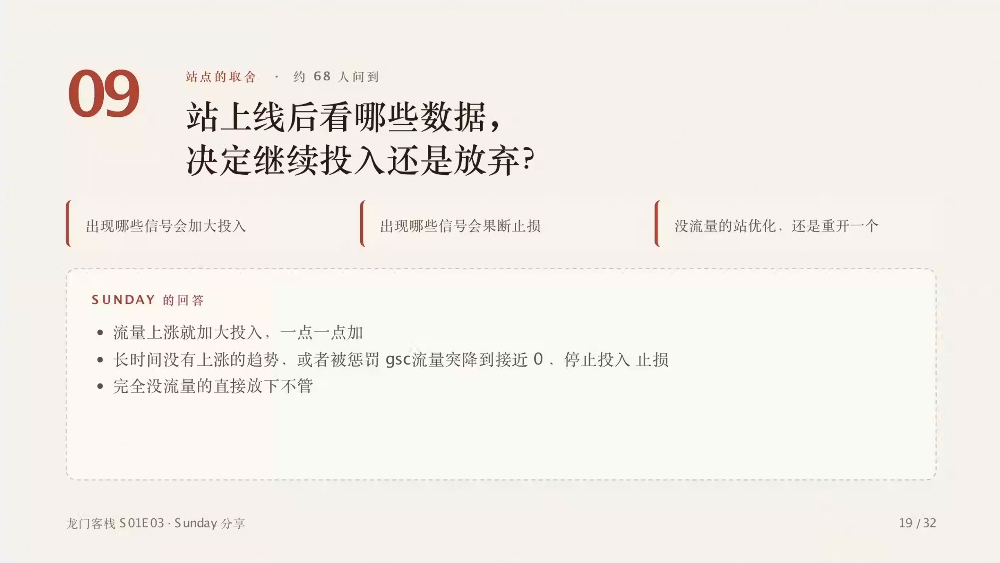
17. 观察期与放弃标准
新词多数 1—2 周就有反应，一般 3 个月大概率有反应；现在也有人打持久战，1—2 个月才见反应。老词更长：半年到一年。放弃标准：外链做到一两百条仍无明显上涨趋势，就先搁置。放弃不等于下线——放在那即可，有站闲置一段时间后，流量莫名其妙自然涨了起来。
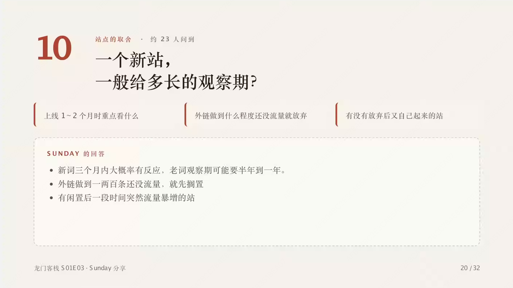
18. 多做站还是少做站
两种打法都有人做成，没有标准答案；按自己性情，选心理压力最小的路。他是「多做站、从里面筛」，源于 FOMO——害怕错过机会。还要结合手里的牌：有钱可以直接投流，做人民币玩家；有自媒体和粉丝，就 build in public。
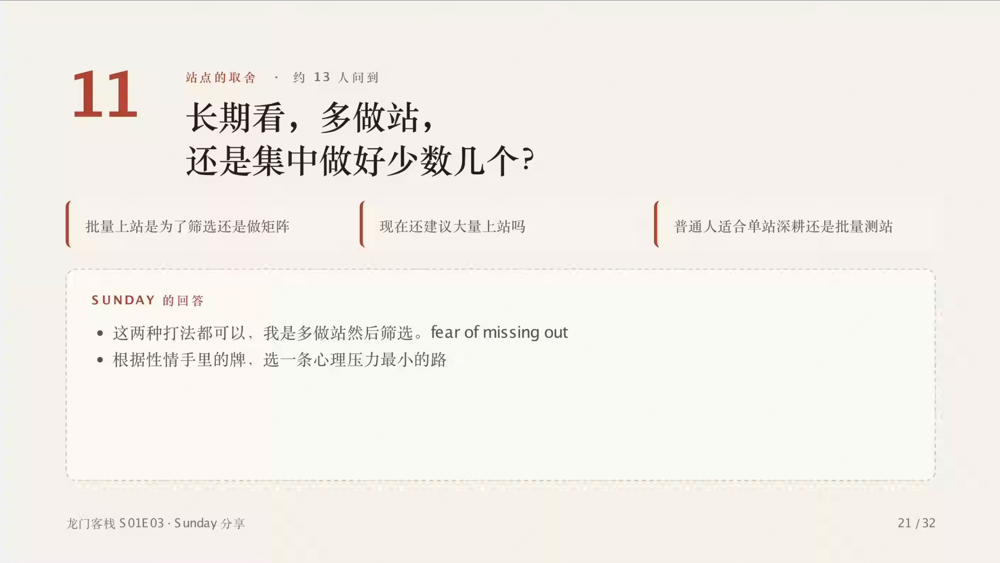
19. 90+ 个站怎么分配精力
大部分精力给最近新上的站（基础配置、基础外链）和少数长线策略的老词站；其他站做了基础外链、长时间没有结果就放置。日常是发外链、维护站点（客服和修 bug），其他时间看站、找词、研究打法。量不大的老站维护并不花时间，大部分时间其实花在找词、看别人的站、研究打法上。
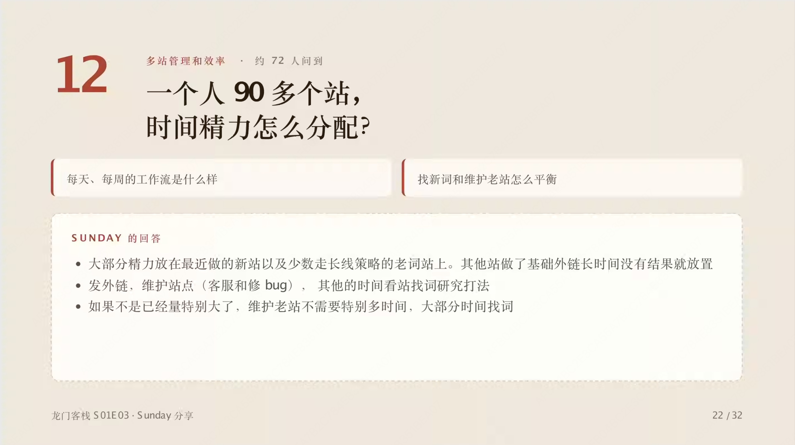
维护原则：有流量、有用户、有付费的做维护；bug 有人反馈或自己发现就修，没有就放着，只做最紧要的事。不再维护的站最好不要下线——万一闲置一段时间后自然起量。
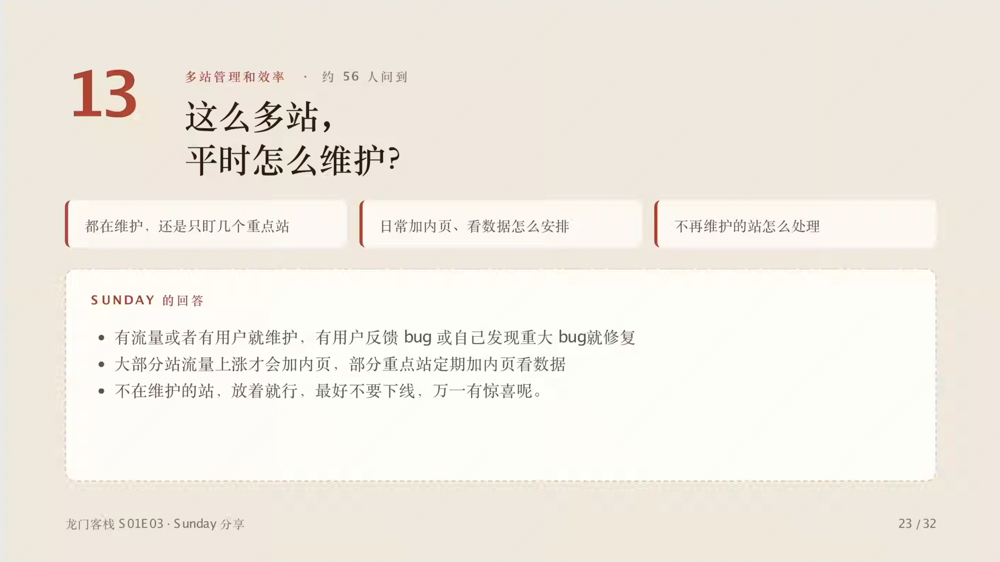
20. AI 分工与人工把关
分工：Codex 负责后端和维护，Claude 负责内容；PPT 上写的是 Claude 也负责前端，口述里补了一句——前端自动化大部分由 Codex 完成，它的 computer use 很好用。成本：Codex 200 刀/月，Claude 20 刀/月，Grokbot 30 刀/月。
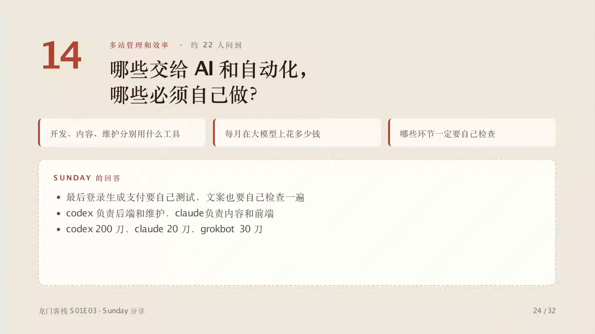
必须自己做：上完站后，登录、生成、支付这几个关键流程一定要亲自测一遍。文案必须自己检查：AI 水准已高，但会自曝——比如用户证言它会主动标注「这是样本 / 虚假」，不删掉，用户看到会有反作用。
五、赚得到：从第一单到月入万刀
21. 三个阶段与个人曲线
0 → 第一单比较简单：一点基础，加一点运气。第一单 → 月入 3000 刀最容易被卡住：原因千奇百怪，把选词找词的各维度逐项排查。月入几千 → 万刀：各维度没问题就顺其自然；但词若是一波流，收入会波动，万刀也未必稳得住。
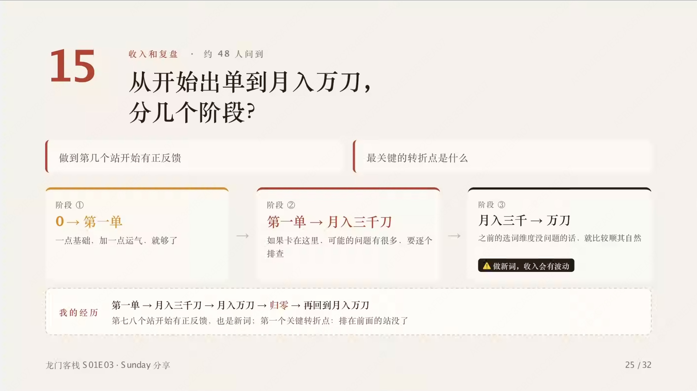
他的完整周期：第一单 → 月入 3000 → 万刀 → 归零 → 重新回到万刀；大约第 7—8 个站开始有正反馈（做的新词），关键转折是排在前面的站没了，他的站顶了上去。
22. 成功的站与失败的站
成功的站两类：要么词的流量很大、竞争也大，吃到一点边角料；要么流量不大但竞争非常小，排到靠前位置。两种机会都有时效性，窗口期一过就没了。失败的站：理由千奇百怪，有的至今不知道为什么。
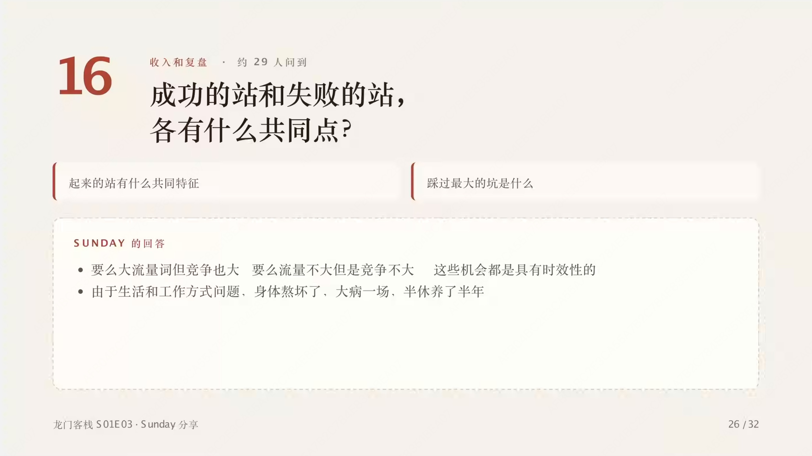
他踩过最大的坑不是某个 SEO 技巧，而是生活和工作方式：身体熬坏了，大病一场，半休养半年。
六、熬得住：从算法工程师到全职出海
23. 为什么转行
不想要的：不想永远在工作间隙、去完成自己的人生大事；不想为升职加薪无尽妥协，只换来虚幻的确定性；干得不开心，身体也变差了。想要的：自由支配自己的生活；财务自由的可能性；看见更多样的世界，找到并突破自己的局限性。
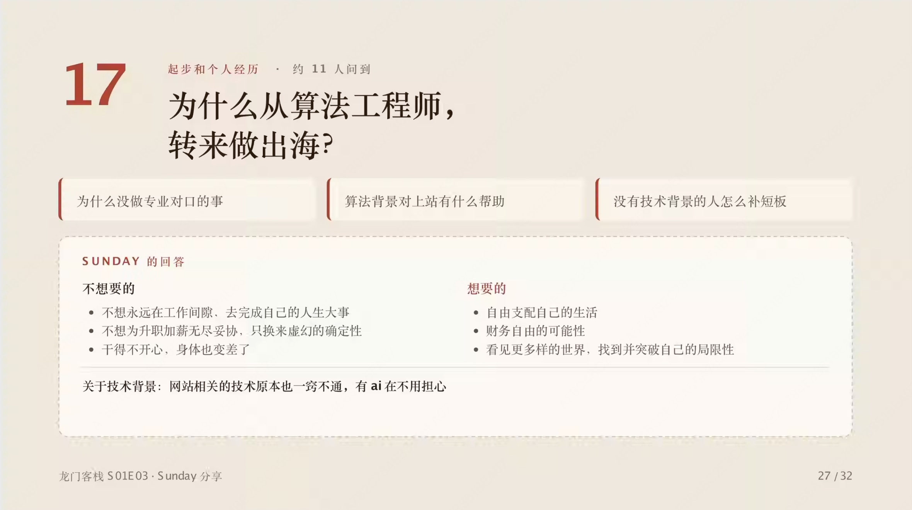
关于技术背景：网站相关的技术原本也一窍不通，有 AI 不用担心。AI 基本抹平了这个差距，核心在别处。
24. 全职、团队与时间
这一年是全职；90 多个站都是「AI 和我」做的，主要 AI 在干活。每周只有十几小时怎么做？SEO 见效慢、广告又不熟、时间不够，就更要把时间花在找词选词上：只能找软柿子，迅速拿到正反馈，然后大量测试。
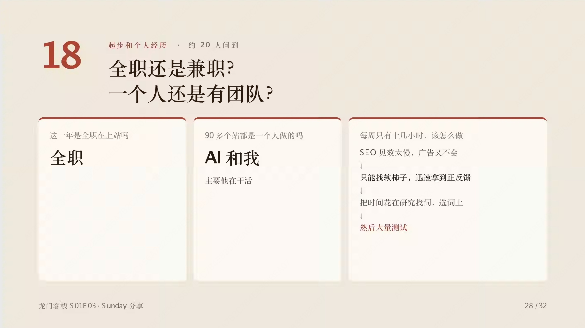
25. 没有正反馈的阶段怎么坚持
焦虑分级处理：轻微焦虑，去做具体的事——焦虑的反义词是具体；高度焦虑，出去玩、找朋友聊天，找同行聊，发现大家都焦虑，自己就没那么焦虑；剩下的，就是熬。
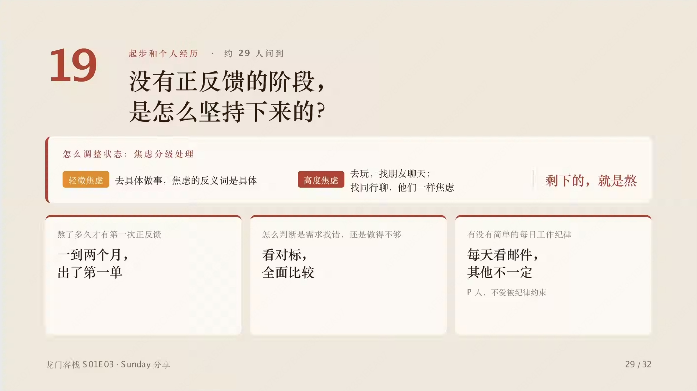
他熬了 1—2 个月出第一单，过程很痛苦。怎么判断是需求找错，还是做得不够对？看对标：和标杆逐项比较差在哪。内页、外链、关键词可能都一样，但不可能完全一样，时间往往比人晚——对 SEO 和新手，时间是非常重要的维度。发现不对，去看对标有没有公开的每日工作记录。每天一定要看邮件吗？用户反馈要看——有人会要求退款；其他的就不一定了。
26. 如果现在从零开始
方向：做新词，特别是趋势热词，哪怕是一波流——对新手，正反馈最重要，否则就是从入门到放弃。前 30 天：精力放在找词找热点上；同时一定修 bug，至少保证最基本的用户体验——否则接不住流量背后的需求。不值得一开始投入的：别把精力过度砸进产品开发、陷入自嗨——他前几个产品自己调 UI 调得很好看、很有成就感，但没有用，因为一个用户都没有。
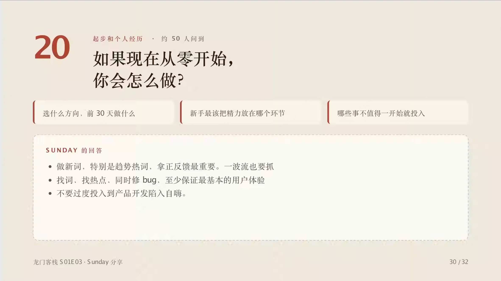
七、结尾：三次痛定思痛
分享最后，他把自己一年的教训收成三句话：对标、迭代、身体。
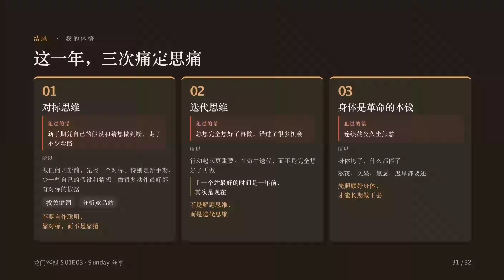
- 对标思维：新手期凭自己的假设和猜想做判断，走了不少弯路。做任何判断前，先找一个对标；特别是新手期，少一些假设和猜想，做很多动作最好都有对标依据——找关键词、分析竞品站都一样。不要自作聪明，靠对标，而不是靠猜。
- 迭代思维：以前总想把一切想清楚、全须全尾再动手，想着想着机会就过去了。行动起来更重要，在做中迭代，而不是完全想好了再做。上一个站最好的时间是一年前，其次是现在。不是解题思维，而是迭代思维。
- 身体是革命的本钱：连续熬夜久坐焦虑，身体垮了，什么都停了。熬夜、久坐、焦虑，迟早都要还；先照顾好身体，才能长期做下去。
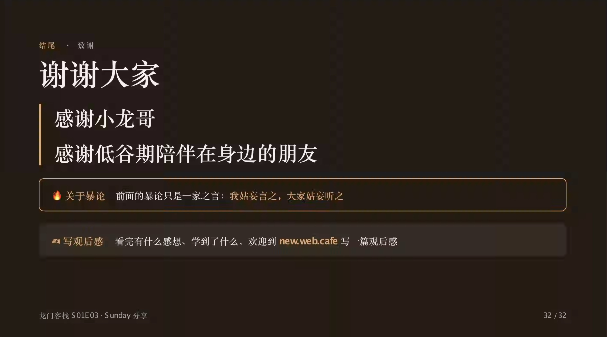
结尾他感谢了小龙哥和低谷期陪伴的朋友，并声明：文中的「暴论」都是个人一家之言，姑妄言之、姑妄听之；欢迎到 new.web.cafe 写观后感。
八、把这场分享压缩成一张行动清单
- 从 Stripe/Creem、TrustMRR、哥伦布或大站内页挑 10 个赚钱站，作为起始输入。
- 对每个站各跑一遍站找词、站找站；对冒出来的词再跑词找词、词找站。
- 给 20 个候选词打三维度分：搜索量、SERP 软柿子、CPC / 竞品收费。
- 建一张异常值清单：短期爆量、直接访问多、新域名高排名、外链少流量大、SERP 全弱站。
- 选 1 个新词，按 9 步 SOP 上一个站；上线前做好 on-page SEO，上线后先加外链，再逐步加内页。
分享信息与图片说明
- 分享场次：龙门客栈 S01E03 · Sunday 分享
- 主讲：Sunday，前算法工程师，全职出海一年
- 原始材料：腾讯录音笔 AI 转写文字稿 + 嘉宾 PPT 截图
- 幻灯片：共 32 页；本文按页码收录第 03—32 页，共 30 张不重复截图；提供的截图从第 03 页开始，第 01—02 页未包含在内；重复的 03、17、22、29 页各保留一张
- 原文链接：出海找词模型与一年实战复盘